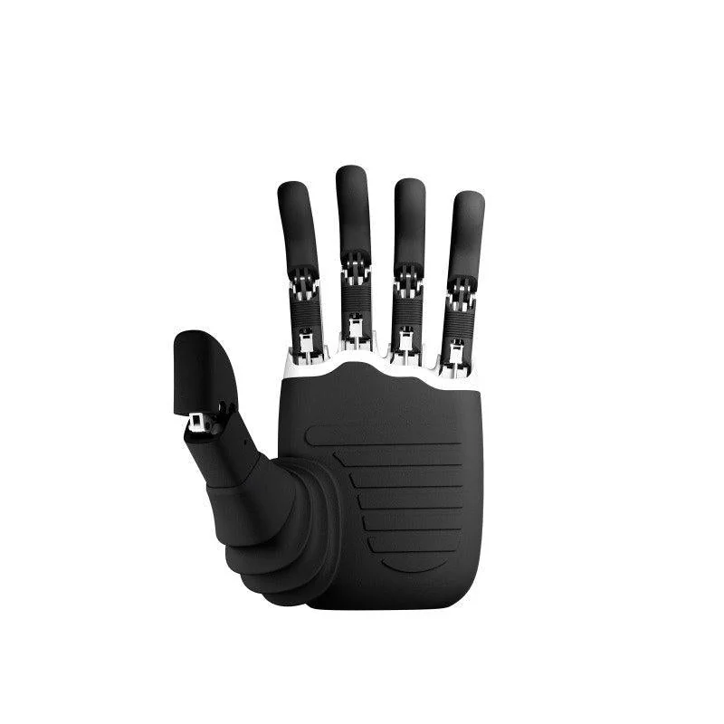

Database · Components
Linkerbot
Linkerbot (灵心巧手) builds five-finger dexterous robot hands from Beijing — affordable platforms for research and embodied AI.
Dexterous Hand Beijing

Company Overview
- Linkerbot focuses on dexterous hands with 5 fingers and multiple degrees of freedom per hand.
- Its hands support research in manipulation and teleoperation for embodied AI.
- A rising component supplier in China's humanoid supply chain.
Key Facts
| Full Name | Beijing Linkerbot Technology Co., Ltd. |
|---|---|
| Chinese Name | 北京灵心巧手科技有限公司 |
| Founded | 2022 |
| Headquarters | Beijing |
| Core Products | Five-finger dexterous hands |
| Applications | Research, embodied AI, teleoperation |
| Status | Growing dexterous-hand maker |
Actuators & Sensors
- Multi-DOF five-finger hands with tendon drive.
- Force/tactile sensing options.
- ROS support and SDKs.
Supply-Chain Analysis
- Beijing R&D + domestic micro-motor supply.
- Cost-focused design for wider adoption.
Competitor Comparison
Competes with Inspire Robots and Wuji in dexterous hands; differs on price and accessibility.